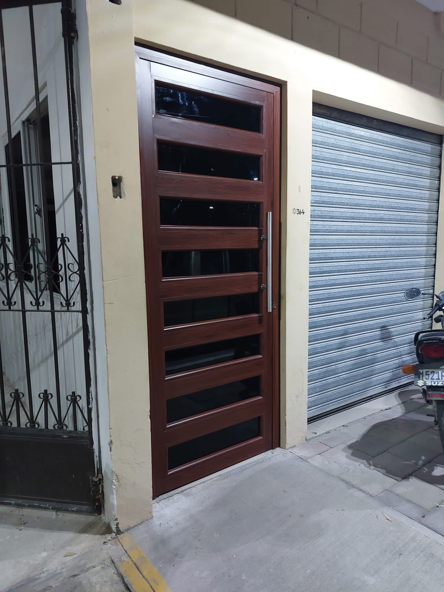
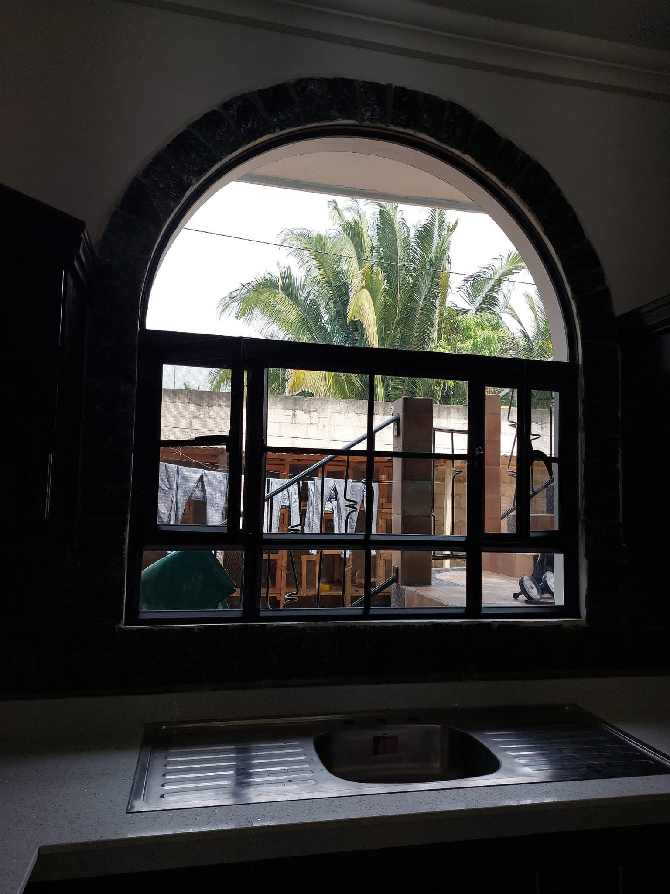
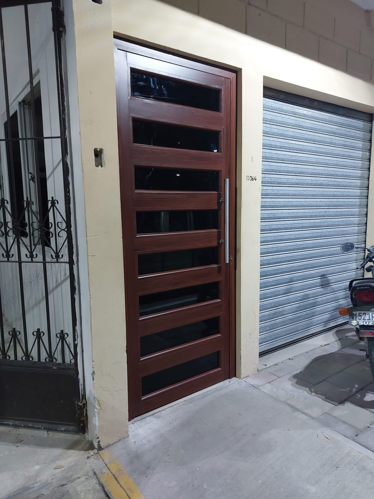
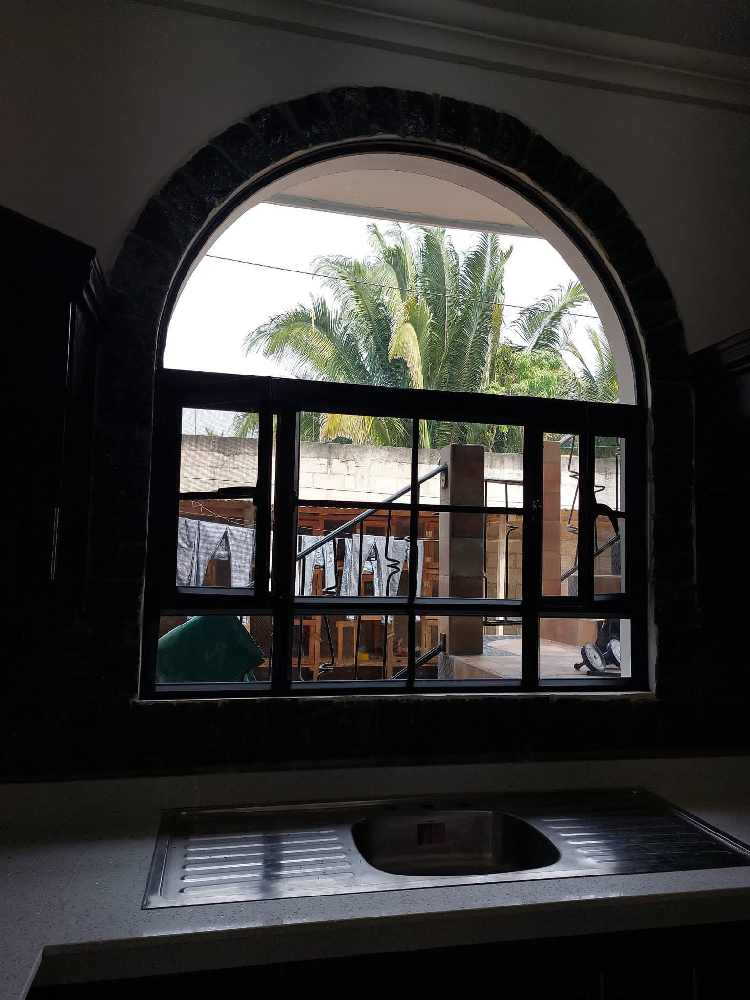
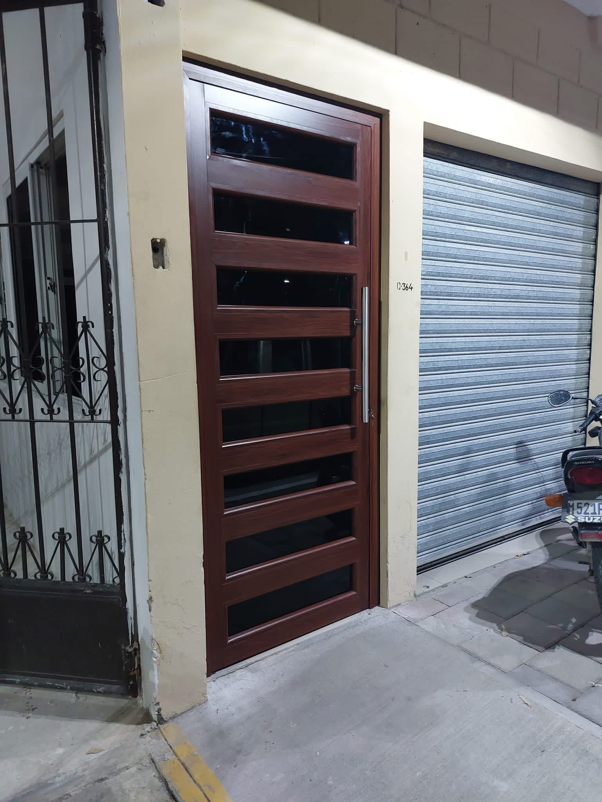
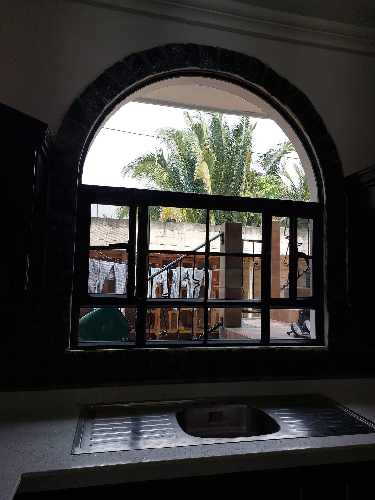

Galería de trabajos

 



Especialistas en vidrio, aluminio y tabla yeso
En Vidrería La Unión nos especializamos en la fabricación e instalación de puertas, ventanas, vitrinas y espejos, así como en trabajos de tabla yeso. Realizamos todo tipo de proyectos en vidrio y aluminio, trabajando a la medida y utilizando materiales de alta calidad para garantizar durabilidad y excelente presentación en cada trabajo.


WhatsApp: +502 4512 9070
Teléfono: +502 5629 4048
Dirección:
2a avenida 14-42, San Benito, Guatemala